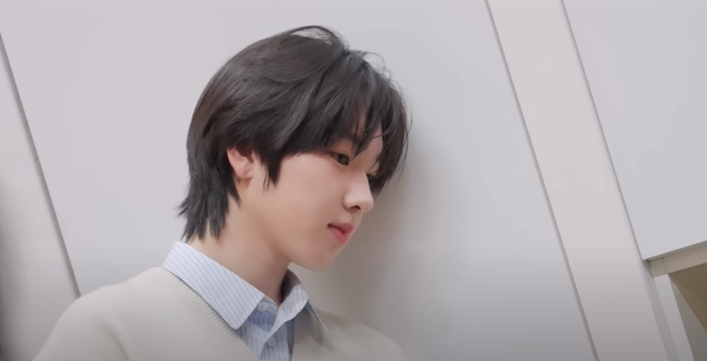
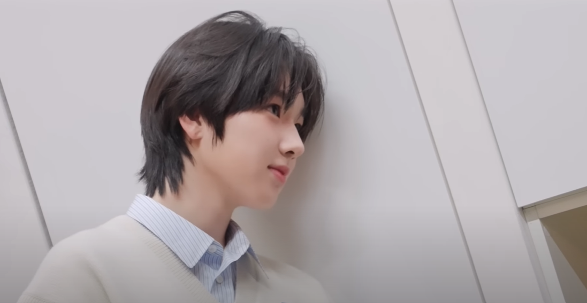
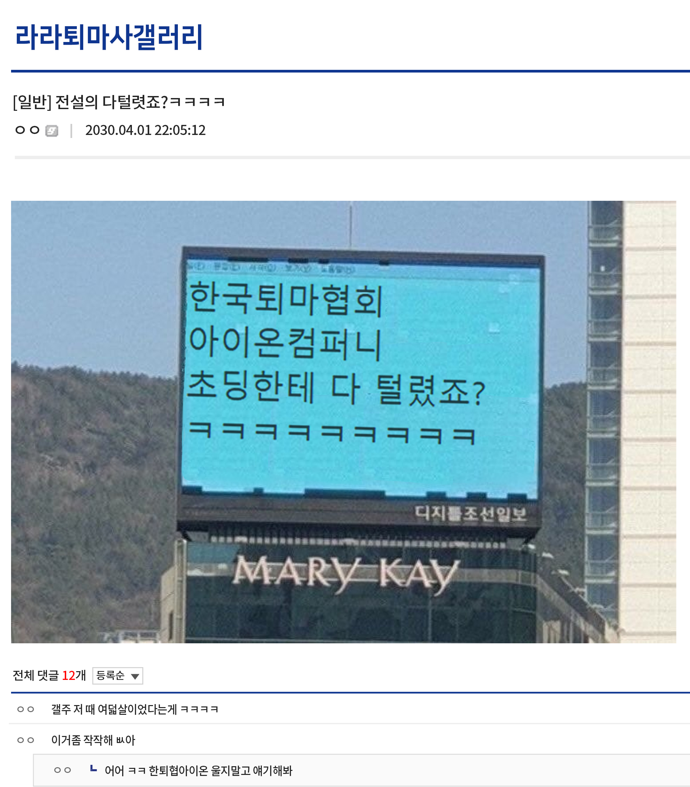

비상한 머리통 덕 어릴 적부터
영재발굴단 유퀴즈 등 출연
[라라의 일상 일기] SNS 계정 개설
대한민국 국민이라면 다 안다는
전설의 우유 CF 아역으로 출연
- 0120 국제 SW 대회 최연소 대상
- 0401
(1) 한국퇴마협회와 아이온컴퍼니 전국
전광판 비롯한 SNS 계정과 홈페이지
해킹 후 자수
(2)[라라의 일상 일기] 계정 판매 후 잠적


라라 17세 XY 176 인플루언서 wish sakuya 언더독 미등록퇴마사
foraranext 님이 게시글을 올렸습니다. - 1분 전
때는 바야흐로 2030 [라라]-@foraranext 계정이 개설된다. 프로필 사진은 기본, 게시글과 스토리 전부 없음. 그런데 이 계정이 어떻게 세상 밖으로 나오게 됐냐면.......
본격 MZ 남자 아이의 위험천만 아찔한 퇴마 일기 무드를 풍기는 첫 번째 게시글-참고로 이때 라라가 입은 착장은 품절 혹은 리셀가 폭등의 결과를 맞이한다. 덧붙여 게시글
맨 마지막 사진에서 라라는 가면을 태우고 있었는데 이게 하나의 챌린지가 된 것도 유머다.-이 얼마 가지 않아 업로드 된다. 알고리즘을 타고 게시글을 본 사람들은
약 십 년 전 틱톡 추천 타임라인을 가득 채우던 멘헤라 공원 단골들을 떠올렸고, [멘헤라 지뢰계 남성 2030.ver ㅋㅋㅋ] 이 지랄을 떨며 각종 커뮤니티로 날랐다. 덕분에
과거까지 들킨 라라는 [순수한 CF 모델이던 아역의 최후.png] 라는 제목으로 커뮤니티를 장악하기도 했다. (물론 추억 한 사발 제대로 들이켜신 우리의 도파민 중독자
분들께서 "퇴마도 해 주는데 위험한 남자 아이라니 이거 완전 럭키비키자나-☆" 라는 고전 밈을 사용해 댓글을 남기기도 했다.)
@foraranext #OOTD
#강아지귀비니 #아디다스베켄바우어흰파트랙탑 #무X사데님워싱와이드팬츠
#아디다스슈퍼스타
정리 안 된 앞머리 손에는 항상 #몬X터 #하얀색
초점 나간 왼쪽 눈 단독으로 회색
무엇이든 물어보세요 ~ @foraranext ~
Q. 퇴마 언제부터 햇음? A. 다털렷죠 이후로 ㅋㅋㅋ
Q. 오빠 피드 잘보고잇어요ㅠ 근데 학교는 안다니는거에여? A. 네 중졸
Q. 몬X터에 밥말아먹어줘 A. (이때, 스토리 두 개로 나뉘어 영상이 올라 왔는데 쌀밥에
몬X터를 가득 채우는 영상 하나와 아무렇지 않게 먹는 영상 하나가 연달아 올라 왔다.)
Q. 왜 맨날 씹떢ㄱ같은 옷만 입어염? A. 역사공부안해? 오늘 진도 멘헤라 지뢰계까지 나간다
Q. ㅎㅌㅎ이랑 ㅇㅇㅇ ㅇㄷㄷ 안 좋아해요? A. 한퇴협 아이온 언더독 사랑합니다 파이팅
Q. 다 털렸죠가 뭐예요? A. 역사공부해

-후일담: 라라는 정말 한퇴협과 아이온에게 아무런 감정이 없다.
눈이 비정상적으로 큰 얼추 열 살 정도로 보이는 여자 아이의 모습을 하고 있다. 전체적으로 매우 사랑스러운 이미지. 라라와 정반대로 백발의 트윈테일 상태이다.
본체는 성년이 된 지 얼마 안 된 여성의 모습이다만 자의 반 타의 반 어린 아이의 모습을 유지하고 있다. 라라의 영꾸(영령 꾸미기) 놀이에 적극 가담 중이기 때문에
의도치 않게 멘헤라 콤비가 됐다. 평소에도 라라 주변을 맴도는 편. 외관과 다르게 어른스러운 면모와 이성적인 판단에 능하다. 불구하고 라라에겐 유독 유한 편인데,
높은 친밀도를 빙자한 동정에 가까워 보인다. 라라와의 귓속말 이외에는 다른 이들과의 모든 대화를 차단. 꼬박꼬박 나비 누나라고 부른다.
순간적인 집중력 향상, 백에 달하는 정확도로 대상에게 피격한다. 막강하게 응축된 힘은 덤. 당장 주위에 있는 돌멩이로도 큰 효과를 기대할 수 있으며 무엇이든 던질 수 있는
물체만 있다면 만사 오케이. 다만 그런 야만적인 방법 대신-물론 아주 급한 상황에선 야만적인 인간이 되기도 한다.- 나비 누나의 자체 커스텀 컴파운드 보우를 사용한다.
(전체적으로 검정. 핸들과 캠에 온갖 키링과 큐빅이 주렁주렁. 어퍼링에는 파란 리본까지 달렸다.) 일반 화살과 화살촉에 탄두가 걸린 탄두 화살로 종류가 나뉜다. 필요에 따라
종류를 선택하는 편. 일반 화살을 걸고 활 시위를 당겼다 놓으면 주변에 강풍을 일으키며 화살촉이 갈라져 세 방향으로 뻗어 나간다. 백에 달하는 정확도를 이용해 대상에게 촉이
박히고 응축된 힘으로 인해 화살촉 하나 당 다섯 정도를 관통할 수 있다. 탄두 화살의 경우 한 발로 막대한 피해를 입힐 수 있지만 이명, 안구 통증 등 전형적인 하이리스크
하이리턴이기에 자주 사용하지 않는다. 능력 특성으로 인해 원거리가 아닌 상황에선 취약해진다는 점, 바른 자세를 유지해야 백에 달하는 정확도가 나오고 컴파운드 보우의 무게가
꽤 나가기 때문에 오랜 시간 능력을 사용하기엔 무리가 있다. -하지만 오랜 시간 능력을 사용하지 않아도 능력 사용 후 단독으로 움직이지 못하고 나비 누나의 부축 혹은 도움이
필히 있어야 이동 및 부가적인 활동이 가능해짐.